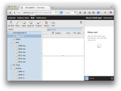
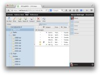

User Manual
{kind=link}
1. First Login
For this section, we assume that you are using JSXC with unified login, i.e., logging in to your web application such as SOGo or ownCloud will also log you into your JSXC XMPP Chat.
After entering username and password as usual, a new dialog "Logging in" will appear, until both JSXC and the web application have logged in. Errors during the XMPP login will be shown in this dialog, while main application login errors will be communicated as they have always been.
{kind=link}
After successful login, the right hand side of your application will show the JSXC bar. During the first login with a browser, the JSXC bar will display that it is creating your security key. After a short while, the display will change to your roster. Already during key generation, you can use the main application as before. JSXC functions will only be available after key generation finishes. The key is stored in your browser and not sent to any server.
If you would like to use more screen real estate for your application, you can resize or hide the JSXC bar with the vertical dividing line. Your web browser will remember the bar visibility.
{kind=link}
2. Roster Management
If you have previously used XMPP for that account, e.g., from another JSXC-enabled application or a native XMPP/Jabber client, your roster, the list appearing in the JSXC bar after the login, will already be populated with the contacts. As with all XMPP clients, the roster is stored on the XMPP server, so your contact list will be available to any XMPP client, including JSXC.
Add a Contact
Modify a Contact
Delete a Contact
3. Notifications
4. Setting Your Status
5. Chatting
Activating Encryption
Audio/Video Chat